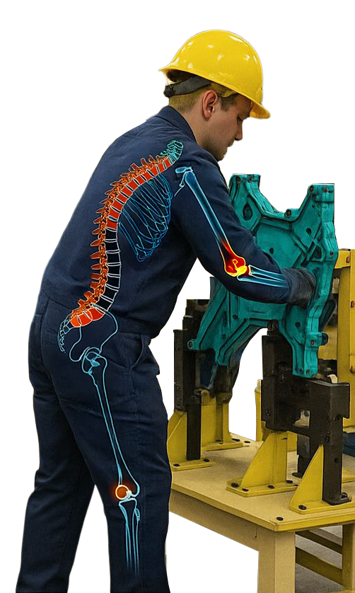
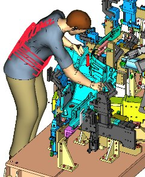
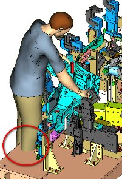
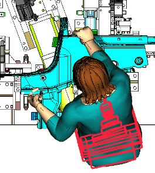
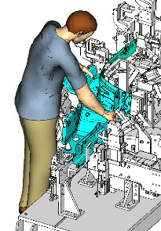
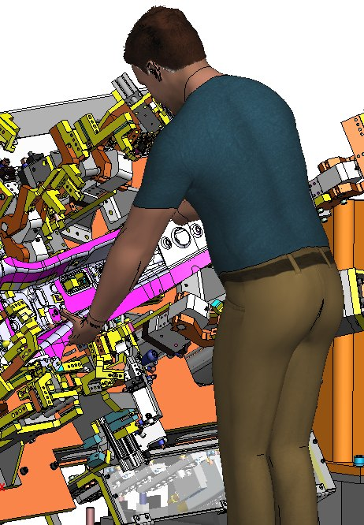
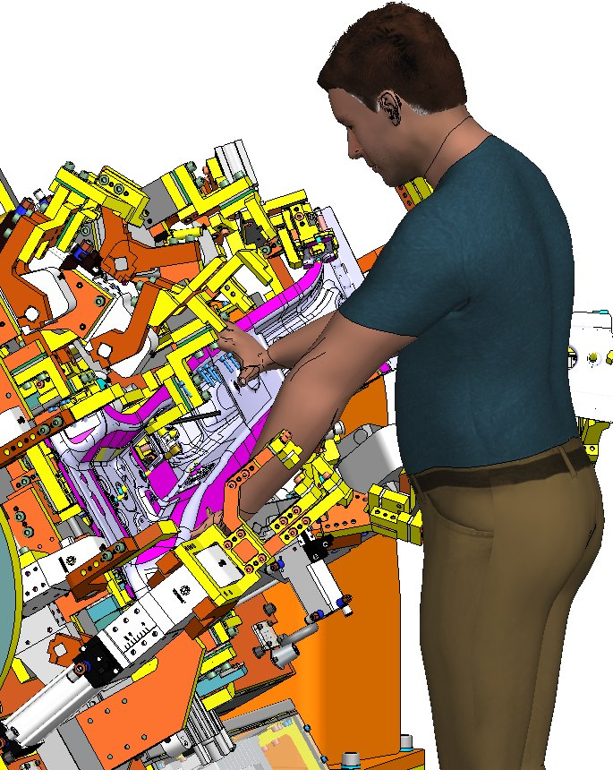
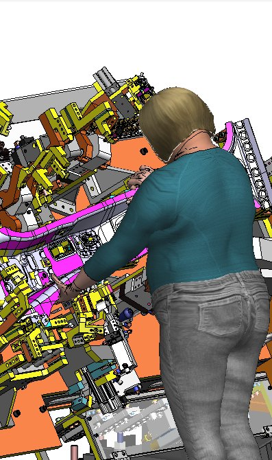
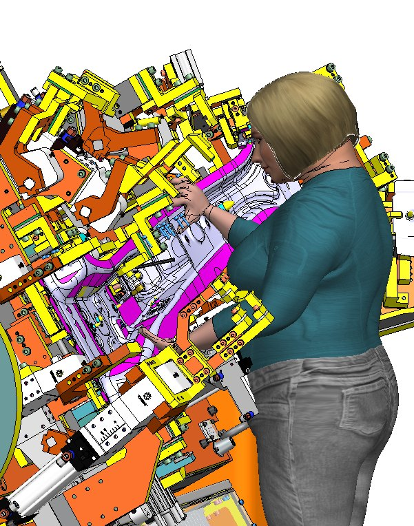

Ergonomics Simulation & Analysis with Human Factors Engineering
Optimizing Workstation Design for Safety, Efficiency, and Injury Prevention

Are Your Workstations Designed for Worker Safety & Efficiency?
The challenge
Typical issues we see
- Hazardous postures & excessive force leading to increased injury risk
- Repetitive motion & high-frequency movements causing fatigue and strain
- Collisions between workers & workstation components, impacting productivity
- Blind load handling & incorrect load positioning, reducing efficiency and safety
- High energy expenditure over shifts, leading to reduced worker performance
- Inconsistent movement times, affecting overall cycle time and productivity
Key Inputs Required for Human Factors Optimization
3D Fixture & Workstation Designs
Digital models for workstation layout evaluation
Worker Movement & Accessibility
Analyzing worker movement, reach, and workflow constraints
Operational Tasks & Cycle Time Data
Identifying high-frequency motions and potential strain points
Process & Layout Specifications
Ensuring workstation integration within production constraints
Historical Ergonomic Injury & Performance
Providing insights into past issues and improvement areas
Deliverables: Human Factors Design Validation & Injury Prevention
Validated 3D Human Simulation Models
High-detail digital simulations of team members’ postures, forces, and movements to confirm workstation feasibility before physical implementation.
Hazardous Posture & Collision Risk Reports
Identify ergonomic risks such as awkward postures, excessive forces, limited visibility, and restricted access, prior to workstation deployment.
Energy Expenditure & Fatigue Analysis
Evaluate physical effort and fatigue over time to optimize task efficiency and reduce long-term strain on workers.
Blind Load & Incorrect Load Handling Assessment
Detect handling issues such as non-visible loads, awkward angles, and inconsistent grips to ensure safe and repeatable material handling.
Ergonomic Failure Mode & Effects Analysis (EFMEA)
Conduct proactive risk assessments to prevent ergonomic design flaws and reduce the potential for musculoskeletal injuries.
Before & After Ergonomic Improvement Report
Present side-by-side analysis of design modifications to demonstrate measurable ergonomic gains and justify redesign investments.
What-If Scenario Testing for Injury Prevention
Test multiple workstation design alternatives through simulation to ensure optimal design under varying operating conditions.
Reach Envelope & Accessibility Zone Mapping
Analyze workstation reach zones based on anthropometric data to ensure comfortable access for a wide range of operators, reducing overreach and improving task ergonomics
Worked example
EFMEA case: from red to green

Collision between Team Member and tool base. High force, awkward back, shoulder postures.

Team Member contact with the tool base at floor level.

Injuries to legs, shoulders, back. Inconsistent / longer TM cycle time.

Tool base redesigned in CAD, collisions eliminated.
In practice
Simulation and analysis outputs




Next step
Reduce injuries and increase productivity by designing ergonomic workstations validated before build.
Tell us about your line, your targets and your constraints. We come back with a scoped proposal, not a sales call.